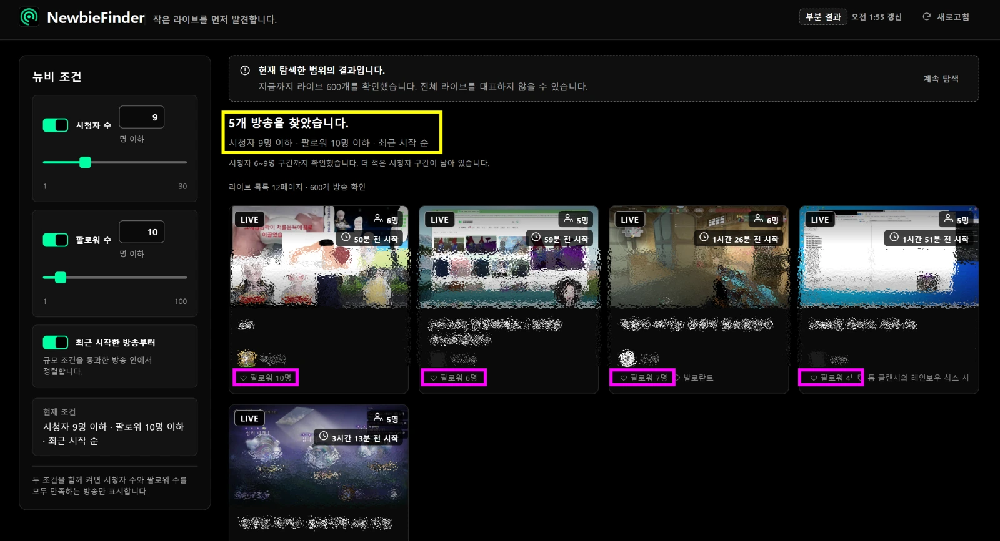

치지직에서 지금 방송 중인
소규모 스트리머를 찾습니다.
치지직의 기본 탐색 화면은 인기 방송과 추천 방송을 중심으로 구성됩니다. 그래서 시청자와 팔로워가 적은 스트리머는 방송을 켜도 눈에 띄기 어렵습니다.
NewbieFinder는 시청자 수와 팔로워 수의 상한을 정해, 그 조건을 만족하는 방송만 따로 모아 보여 줍니다. 로그인은 필요하지 않고, 별도의 서버 없이 브라우저 안에서만 동작합니다.
시청자 9명, 8명. NewbieFinder가 찾는 방송은 이런 규모입니다.
Chrome 웹 스토어 등록은 준비 중입니다. 지금은 GitHub 에서 소스를 내려받아 직접 설치할 수 있습니다.

무엇을 하나요
찾는 기준은 채널의 생성 연도가 아니라 지금의 규모입니다. 두 개의 숫자만 정하면 됩니다.
시청자 수 조건
1~30명 범위에서 상한을 정합니다. 지금 몇 명이 보고 있는 방송까지 찾을지 직접 고릅니다.
팔로워 수 조건
1~100명 범위에서 상한을 정합니다. 두 조건을 함께 켜면 둘 다 만족하는 방송만 남습니다.
최근 시작 순
규모 조건이 켜져 있을 때만 쓸 수 있습니다. 방송을 막 켠 대형 채널이 결과를 덮는 일을 막기 위해서입니다.
정직한 탐색 범위
어디까지 확인했는지, 전부인지 일부인지를 항상 함께 보여 줍니다. 불완전하면 부분 결과라고 밝힙니다.
로그인 없음
네이버 계정, 로그인 쿠키, 액세스 토큰을 요구하지 않습니다. 로그인 상태와 관계없이 같은 결과를 보여 줍니다.
추적 없음
분석·광고 SDK가 없고, 확장 자체 서버도 없습니다. 어떤 방송을 보았는지 기록하지 않습니다.
어떻게 쓰나요
-
치지직을 엽니다. 툴바 아이콘은
chzzk.naver.com을 보고 있을 때만 활성화됩니다. -
아이콘을 클릭합니다. 치지직 화면은 그대로 두고, 별도의 탐색 화면이 새 탭으로 열립니다.
-
조건을 정합니다. 기본값은 시청자 10명 이하입니다. 숫자를 바꾸면 이미 확인한 데이터에서 바로 다시 걸러 냅니다.
-
카드를 누릅니다. 해당 채널의 치지직 페이지가 새 탭으로 열립니다.
개인정보를 수집하지 않습니다
브라우저에 저장하는 값은 사용자가 직접 설정한 조건과 공개 방송 정보의 짧은 캐시뿐이며, 둘 다 기기를 벗어나지 않습니다.
- 쿠키를 읽지 않습니다. 모든 요청은 인증 정보 없이 나갑니다.
- 방문 기록과 탭 내용을 읽지 않습니다. 치지직 페이지에 코드를 넣지 않습니다.
-
네트워크 요청 대상은
https://api.chzzk.naver.com한 곳뿐이며 읽기 전용입니다. - 확장을 삭제하면 저장된 값이 Chrome에 의해 함께 지워집니다.
자세한 내용은 개인정보 처리방침에 있습니다.
설치
웹 스토어 등록 전이므로 소스를 내려받아 직접 올려 사용합니다. Chrome 120 이상과 Node.js 20 이상이 필요합니다.
-
소스를 내려받습니다. GitHub 저장소에서
Code → Download ZIP을 누르거나git clone https://github.com/JTech-CO/NewbieFinder.git을 실행합니다. -
빌드합니다. 내려받은 폴더에서
npm ci후npm run build를 실행하면dist/가 만들어집니다. -
확장 관리 페이지를 엽니다. 주소창에
chrome://extensions를 입력하고 오른쪽 위의 개발자 모드를 켭니다. -
압축해제된 확장 프로그램을 로드합니다.
dist/폴더를 선택하면 설치가 끝납니다.
알아 두실 점
NewbieFinder의 ‘뉴비’는 시청자 수와 팔로워 수를 기준으로 찾은 소규모 라이브 후보입니다. 실제 채널 개설일이나 방송 경력을 뜻하지 않습니다. 오래 방송했지만 여전히 규모가 작은 채널도 함께 나옵니다.
치지직 웹 클라이언트가 사용하는 공개 응답을 읽습니다. 공식 Open API가 아니므로 사전 공지 없이 형식이 바뀌거나 중단될 수 있습니다. 그런 경우 확장은 잘못된 결과를 보여 주는 대신 오류 상태로 멈추며, 접근이 제한되면 우회하지 않습니다.